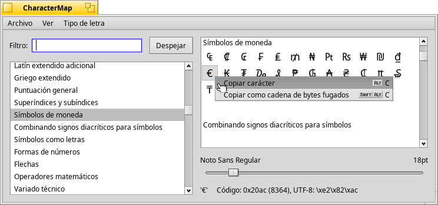

CharacterMap
CharacterMap
| Deskbar: | ||
| Ubicación: | /boot/system/apps/CharacterMap | |
| Configuración: | ~/config/settings/CharacterMap settings |
CharacterMap le mostrará el código UTF-8 de cada carácter que soporte una tipo de letra.
A la izquierda se ven los bloques estandarizados, junto con una función de filtro. Opcionalmente, se puede seleccionar también (Mostrar bloquees privados) desde el menú (Vista). El cuadro de la derecha muestra los caracteres actuales del bloque seleccionado, utilizando el tipo de letra especificada en el menú (Tipo de letra). Debajo se puede cambiar el tamaño de letra, y debajo, se muestran los valores en hexadecimal, decimal y UTF-8 de los caracteres que estén bajo el puntero del ratón.
Se puede arrastrar y soltar un caracter directamente del mapa de carateres a un editor de texto, o hacer clic derecho sobre uno bien para (ALT C) o (SHIFT ALT C). Resultando en o bien € o \\xe2\\x82\\xac.